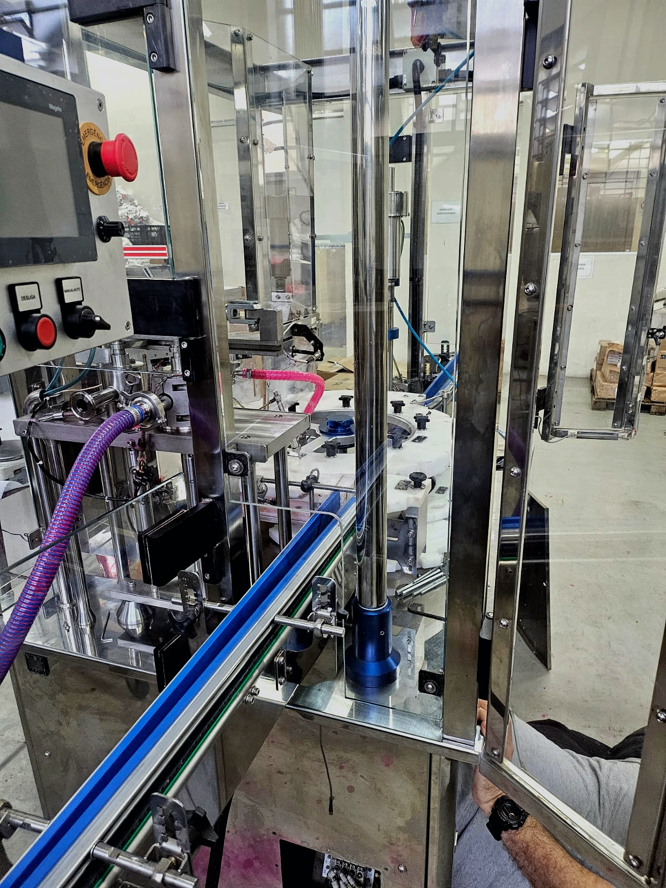
Adequações NR12
Projetos de adequação com foco em segurança operacional, intertravamentos, dispositivos de segurança e conformidade técnica.
Abrir solicitação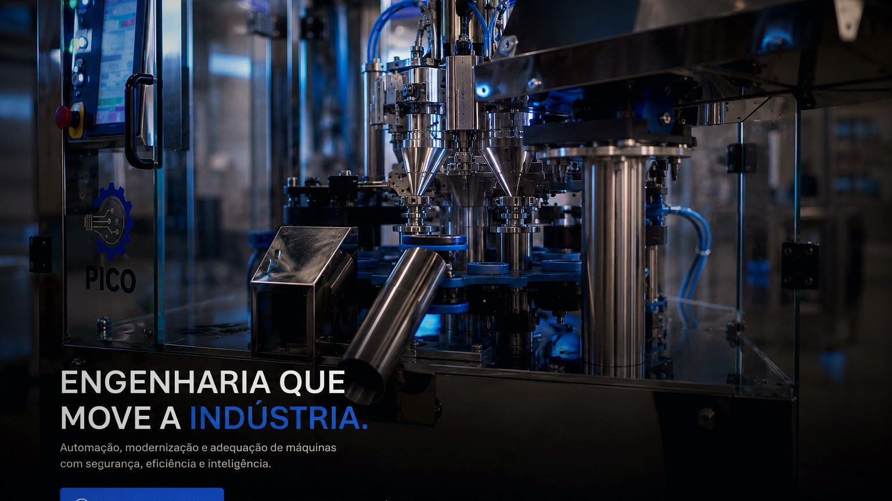
Suporte mensal em automação industrial
Contratos de suporte técnico para acompanhar CLP, IHM, painéis, retrofit, máquinas novas e pendências de automação antes que virem emergência.
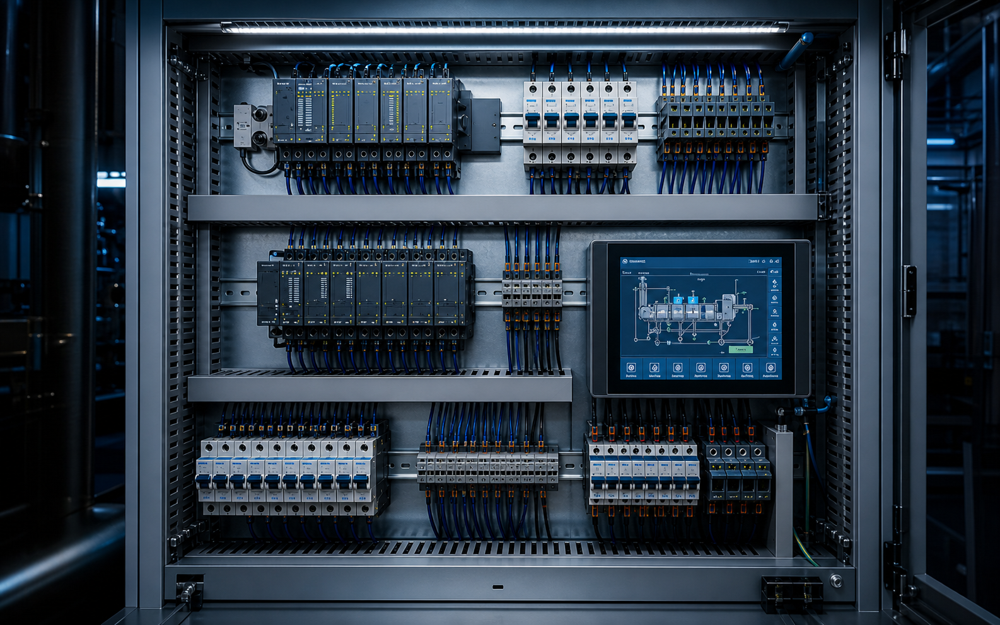
A Axion entra como apoio técnico recorrente para a manutenção industrial: acompanha pendências, organiza prioridades, atua em falhas de automação e transforma demandas soltas em um plano mensal de melhoria e confiabilidade.
Serviços
Atendimentos avulsos resolvem urgências. O acompanhamento mensal organiza a fila técnica, reduz reincidências e mantém automação, painéis e máquinas sob controle.

Projetos de adequação com foco em segurança operacional, intertravamentos, dispositivos de segurança e conformidade técnica.
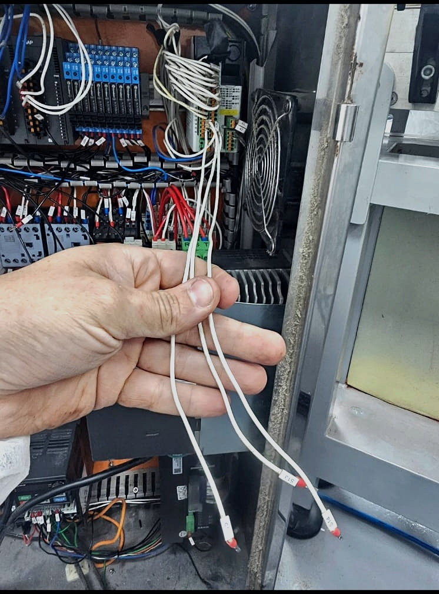
Desenvolvimento de software para CLP, IHM, servoacionamentos e integração industrial com foco operacional.
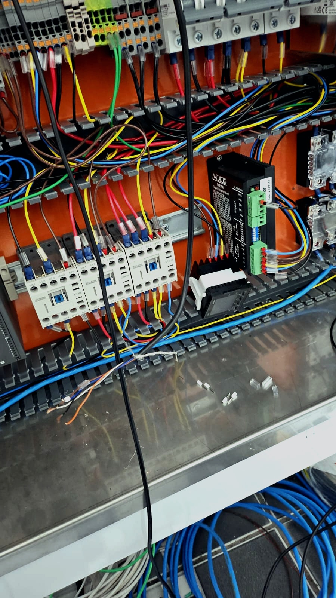
Modernização de máquinas e painéis elétricos utilizando componentes robustos e tecnologias atuais.
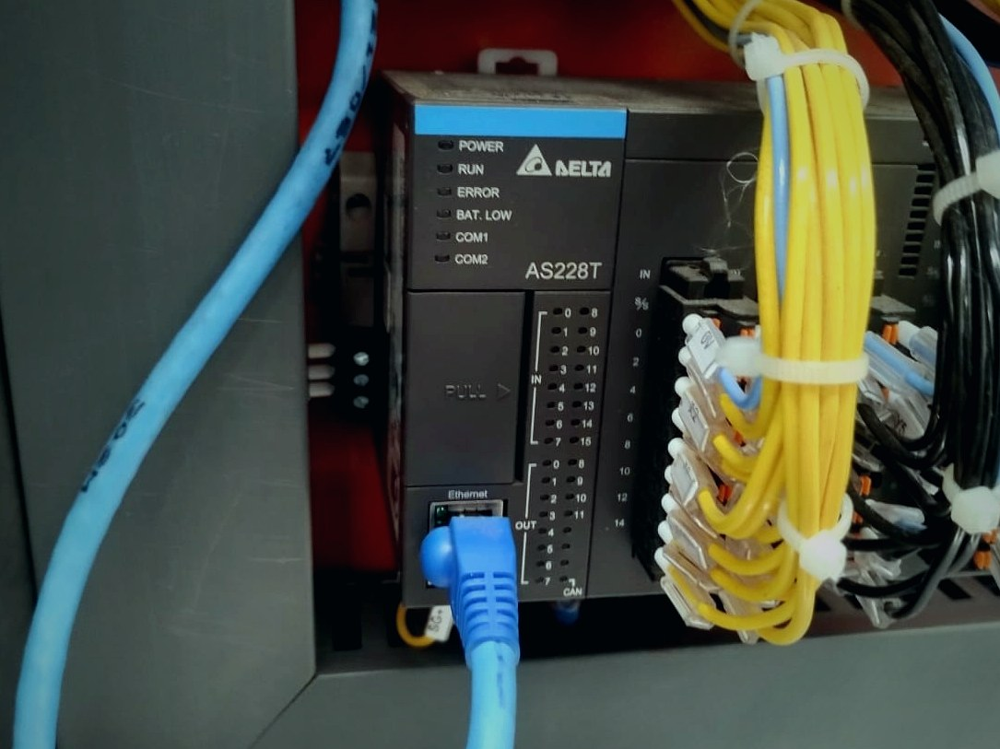
Integração de sistemas industriais para maior produtividade, confiabilidade e eficiência operacional.
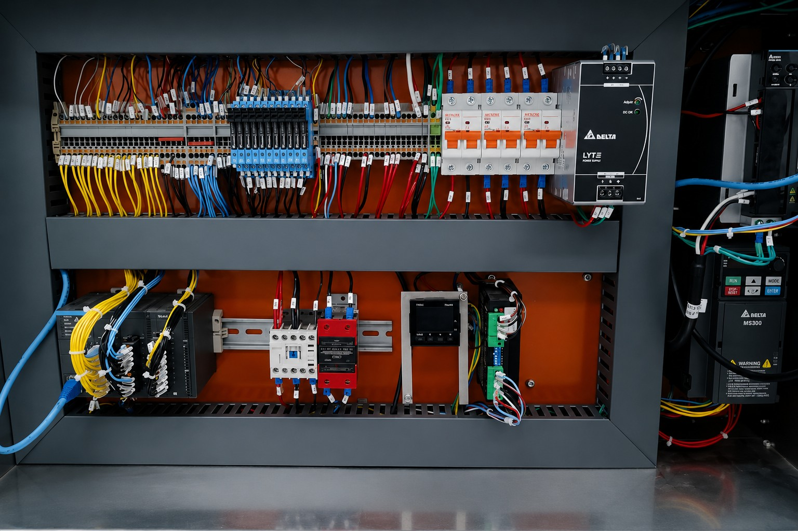
Projeto de painéis, programação CLP/IHM e integração de sensores, inversores, servos e segurança conforme normas atuais.
Suporte recorrente para acompanhar pendências, backups, diagnósticos, ajustes de operação e melhorias planejadas.
Ver estrutura dos planosOferta principal
Para empresas que querem reduzir paradas, manter pendências técnicas sob controle e ter uma referência em automação industrial acompanhando a operação mês a mês.
Levantamento de máquinas, painéis, CLP/IHM, falhas recorrentes e prioridades técnicas.
Visitas programadas, suporte remoto, registros técnicos e plano de ações por prioridade.
Correções, backups, ajustes, recomendações e preparação de projetos maiores quando necessário.
Como funciona na prática
A Axion começa entendendo a operação, organiza as pendências por prioridade e passa a acompanhar máquinas, painéis, CLP/IHM e melhorias em uma cadência mensal.
Levantamento das máquinas críticas, painel, CLP, IHM, backups, falhas recorrentes e riscos de parada.
Separação entre urgências, melhorias rápidas, riscos de segurança e projetos que precisam de proposta própria.
Atendimentos programados, ajustes, diagnósticos, acompanhamento de testes e orientação à manutenção.
Registro técnico do que foi feito, pendências abertas, recomendações e plano para o próximo ciclo mensal.
8h/mês
Base para empresas que querem começar a organizar pendências técnicas recorrentes.
16h/mês
Indicado para operações com demandas frequentes em máquinas, painéis e automação.
32h/mês
Para empresas que precisam de uma referência técnica constante junto à manutenção.
Peças, componentes, reformas completas, adequações NR12 completas, grandes desenvolvimentos, montagem completa de painéis e horas excedentes são tratados à parte, com proposta específica.
Essa divisão mantém o contrato mensal previsível e evita misturar rotina técnica com projetos maiores que exigem compra de materiais, engenharia dedicada ou execução extensa.
Falar sobre contrato mensalSolicitação técnica
Para clientes em contrato, cada solicitação pode virar um registro técnico: máquina, urgência, fotos, problema relatado e histórico do atendimento.
Problemas que resolvemos
A Axion Automação Industrial desenvolve soluções para atualização, segurança, suporte recorrente e modernização industrial com foco técnico e operacional.
O contrato mensal transforma chamadas emergenciais em acompanhamento planejado: diagnóstico, prioridades, execução técnica e registro do que precisa evoluir.
Diferenciais
Visitas programadas, suporte remoto e registro das pendências que precisam sair da informalidade.
Interfaces, alarmes, backups, parâmetros e lógica de controle pensados para operação e manutenção.
Painéis, CLP/IHM, inversores, servos e segurança aplicados tanto em máquinas novas quanto em modernizações.
Atuação orientada a reduzir reincidência de falhas, melhorar confiabilidade e organizar próximos passos.
NR12 / NR10
O laudo NR12 enviado traz embasamento em NR 12, NR 10, NBR ISO 12100 e NBR 14153, com avaliação de segurança elétrica, mecânica e operacional.
"Verificação dos sistemas de acionamento e de parada, proteções, monitoramento elétrico e atendimento da legislação federal NR-12."
Trecho sintetizado a partir do laudo técnico NR12/NR10Aplicações reais
Conteúdos técnicos de campo ajudam o cliente a enxergar que a Axion não atua só na emergência: diagnostica, desenvolve, executa e valida melhorias na máquina real.
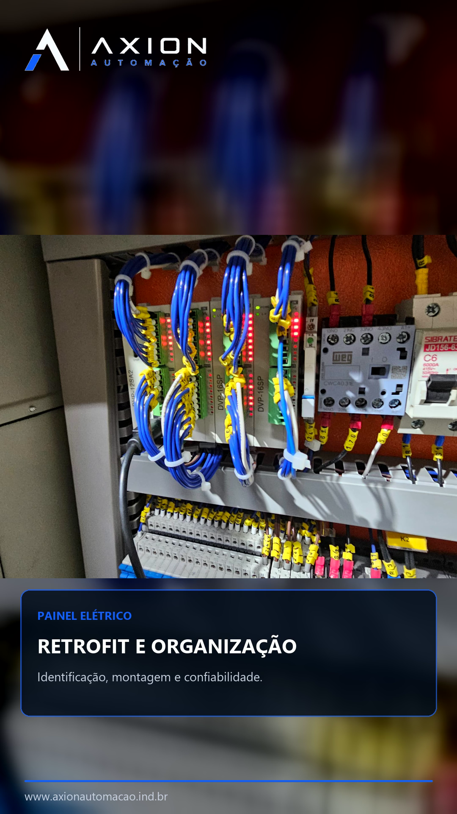
Organização de painel, revisão de ligações, identificação e atualização da base elétrica.
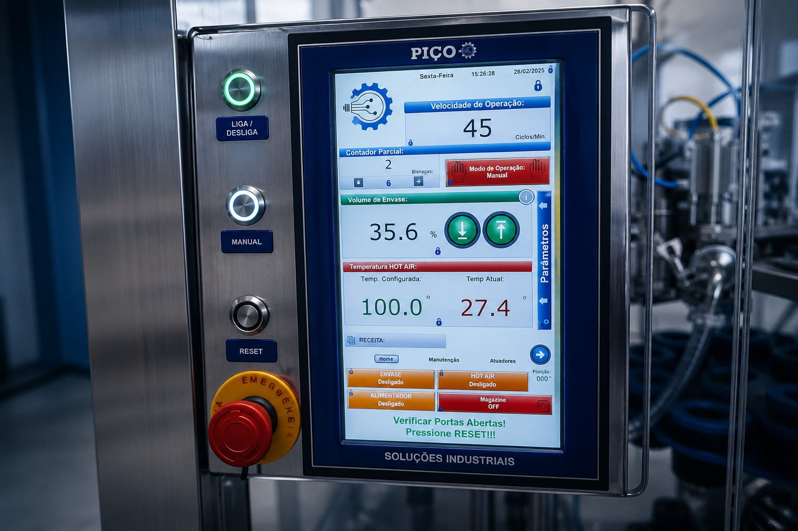
Lógica revisada e interface mais clara para operação, diagnóstico e rotina de manutenção.
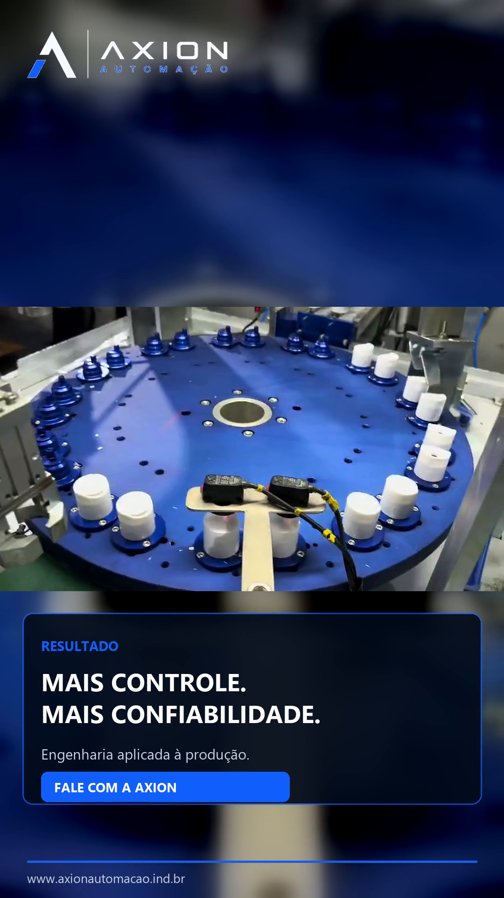
Processo testado na máquina real, com mais controle, confiabilidade e base para melhorias futuras.
Software industrial
A interface, a lógica de controle e as comunicações industriais precisam facilitar a rotina do operador, a manutenção da máquina e o acompanhamento dos gestores.
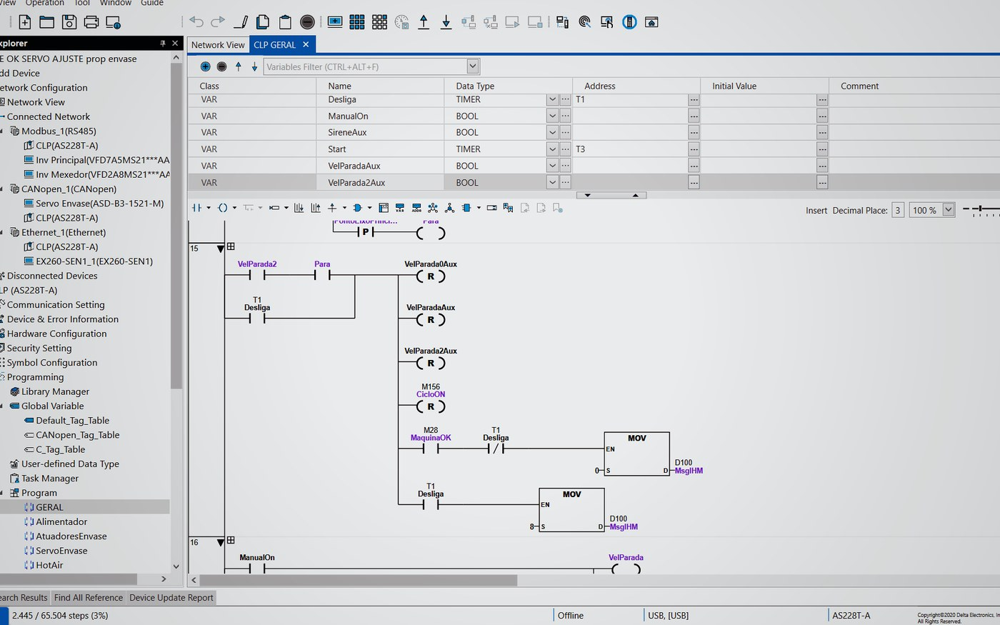
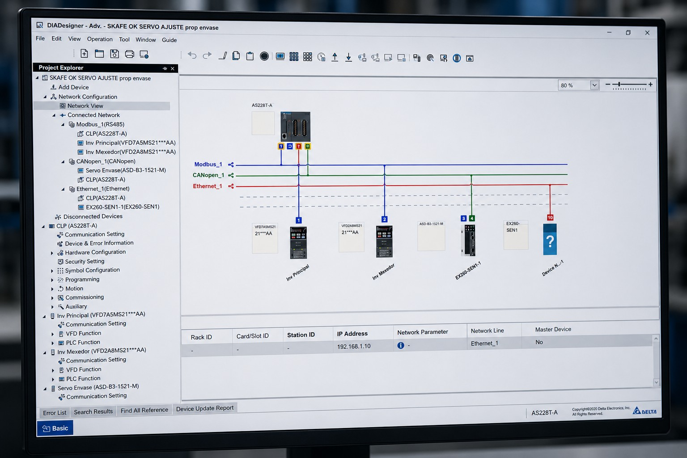
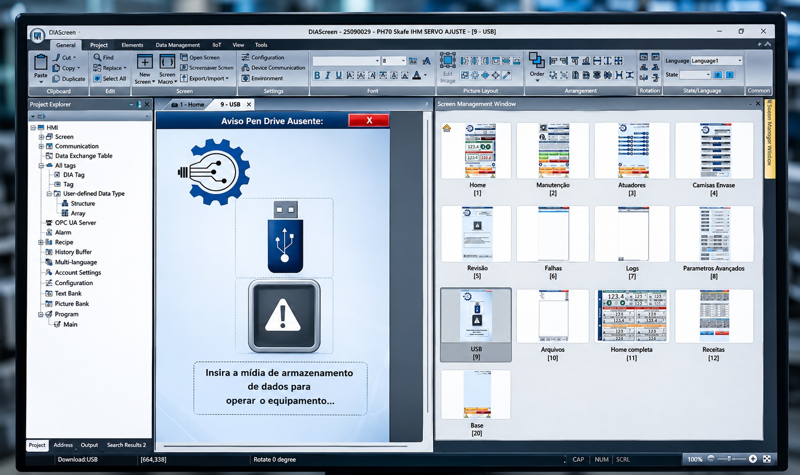
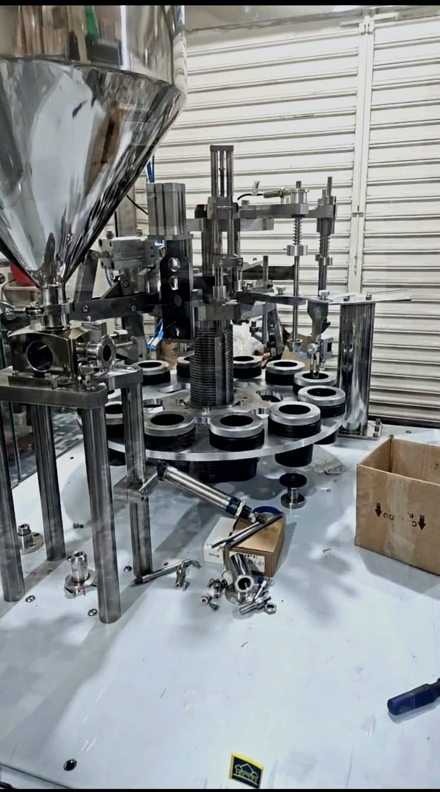
Sobre a Axion
A Axion Automação atua no desenvolvimento e modernização de sistemas industriais, oferecendo contrato mensal de suporte técnico, automação, retrofit elétrico, adequações NR12/NR10, painéis elétricos e desenvolvimento de software industrial.
Atendemos indústria em geral, envase, usinagem, farmacêutica, automotiva, máquinas especiais e processos industriais. Os projetos são conduzidos com foco em produtividade, confiabilidade, segurança e facilidade de manutenção.
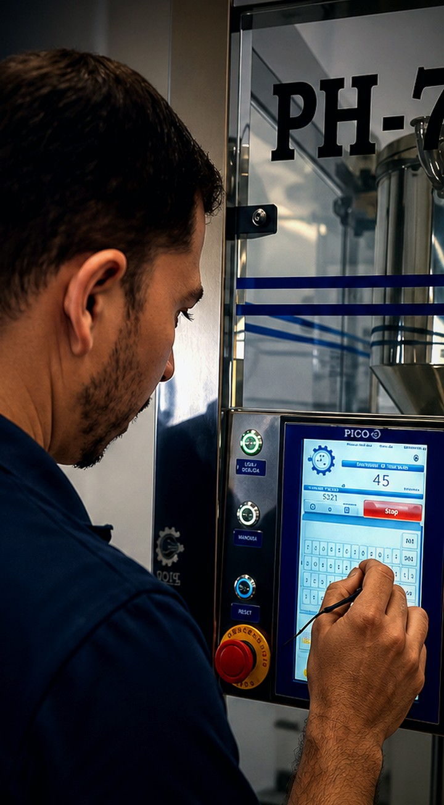
Responsável técnico
Engenheiro eletricista, engenheiro de segurança do trabalho e responsável pela condução técnica dos projetos e contratos de suporte da Axion.
A experiência combina programação de CLP/IHM, servoacionamentos, inversores, retrofit elétrico, diagnóstico técnico e segurança aplicada à operação real. Essa visão prática orienta o suporte mensal: entender a máquina, organizar prioridades e acompanhar a evolução técnica da manutenção.
Contato
Envie o tipo de máquina, painel ou sistema que precisa de acompanhamento. A Axion pode avaliar automação, segurança, retrofit, software, máquinas novas e uma rotina mensal de suporte técnico.
Endereço:
Av. Dom Pedro II, 505 - Atibaia/SP
E-mail:
contato@axionautomacao.ind.br
joao.araujo@axionautomacao.ind.br
WhatsApp:
(11) 98977-4997
Instagram:
@axionautomacaoindustrial
Dados da empresa:
Axion Automação Industrial LTDA
CNPJ: 41.531.015/0001-63